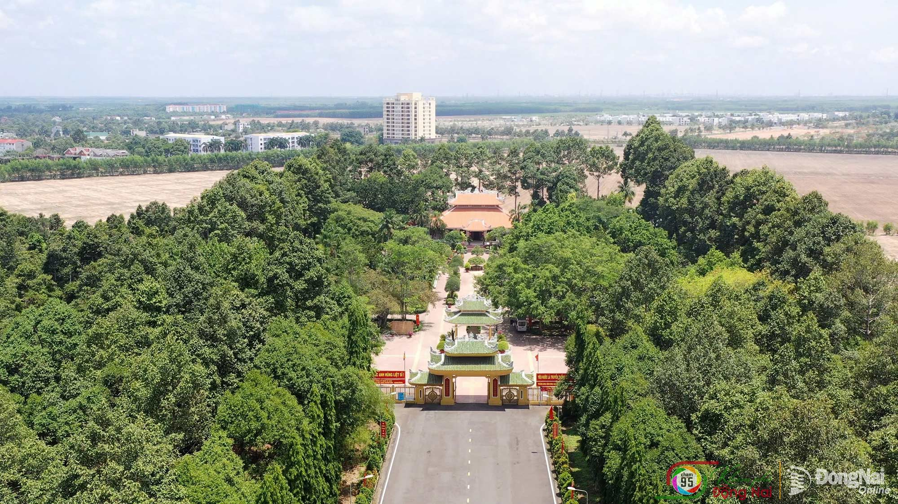
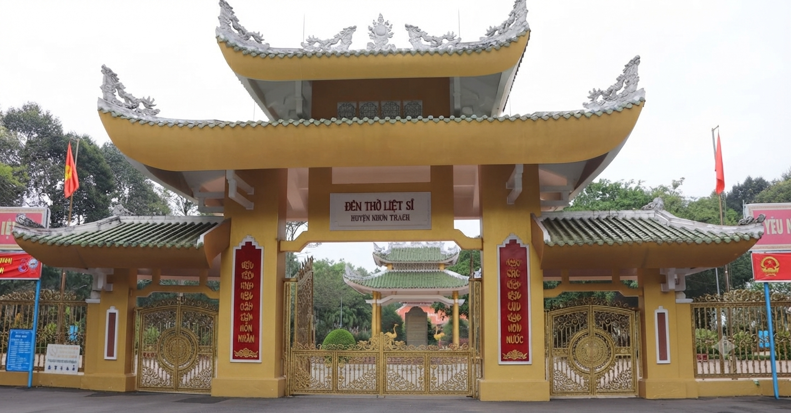
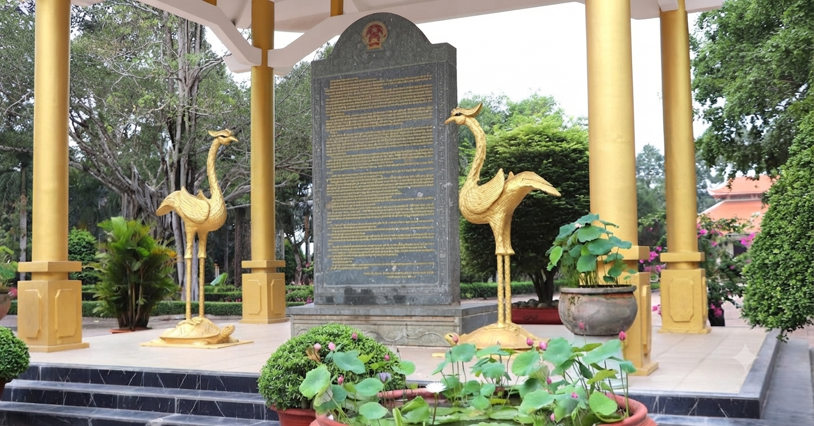
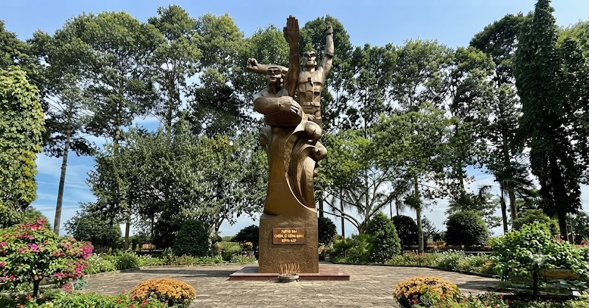
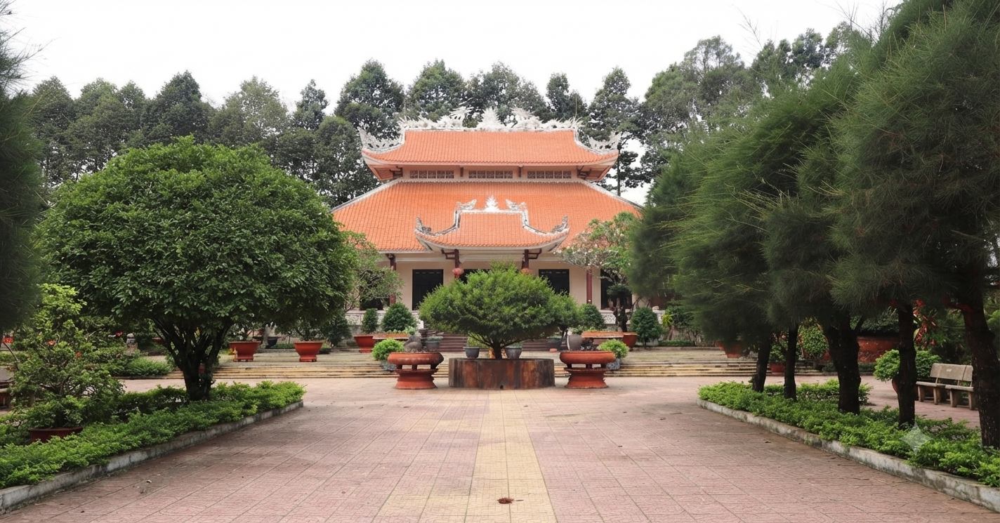

1. Giới thiệu về Đền Thờ và Nghĩa Trang Liệt Sĩ Nhơn Trạch
Nằm giữa lòng huyện Nhơn Trạch, Thành phố Đồng Nai, Đền Thờ Liệt Sĩ Nhơn Trạch không chỉ là một công trình kiến trúc đặc sắc mà còn là biểu tượng của lòng biết ơn và truyền thống cách mạng anh hùng. Được khởi công xây dựng vào ngày 10/11/1998 và khánh thành ngày 01/9/1999, đền thờ này ra đời như một lời tri ân sâu sắc đối với những người con ưu tú đã hy sinh vì độc lập, tự do của dân tộc. Nhơn Trạch từ lâu đã được biết đến là vùng đất giàu truyền thống cách mạng. Trong hai cuộc kháng chiến chống thực dân Pháp và đế quốc Mỹ, nhân dân nơi đây đã dâng hiến sức người, sức của, đấu tranh kiên cường để giành lấy độc lập, tự do cho tổ quốc. Đền Thờ Liệt Sĩ Nhơn Trạch được xây dựng nhằm thể hiện đạo lý “Uống nước nhớ nguồn” và là nơi để thế hệ hôm nay và mai sau tưởng nhớ những hy sinh cao cả ấy.

📸 Hình ảnh toàn cảnh đền thờ
Nằm giữa lòng huyện Nhơn Trạch, Thành phố Đồng Nai, Nghĩa Trang Liệt Sĩ Nhơn Trạch không chỉ là một công trình kiến trúc đặc sắc mà còn là biểu tượng của lòng biết ơn và truyền thống cách mạng anh hùng. Được khởi công xây dựng vào ngày 10/11/1998 và khánh thành ngày 01/9/1999, nghĩa trang này ra đời như một lời tri ân sâu sắc đối với những người con ưu tú đã hy sinh vì độc lập, tự do của dân tộc. Nhơn Trạch từ lâu đã được biết đến là vùng đất giàu truyền thống cách mạng. Trong hai cuộc kháng chiến chống thực dân Pháp và đế quốc Mỹ, nhân dân nơi đây đã dâng hiến sức người, sức của, đấu tranh kiên cường để giành lấy độc lập, tự do cho tổ quốc. Nghĩa Trang Liệt Sĩ Nhơn Trạch được xây dựng nhằm thể hiện đạo lý “Uống nước nhớ nguồn” và là nơi để thế hệ hôm nay và mai sau tưởng nhớ những hy sinh cao cả ấy.

📸 Hình ảnh toàn cảnh nghĩa trang
2. Vị trí và cấu trúc của đền thờ liệt sĩ
Đền Thờ Liệt Sĩ Nhơn Trạch nằm trong quần thể khu di tích lịch sử – văn hóa địa đạo Nhơn Trạch, kết nối với khu vực xã Phước An, Thành phố Đồng Nai. Công trình này có diện tích gần 25.000 m², bao gồm các hạng mục chính như cổng tam quan, nhà văn bia, tượng đài chiến sĩ đặc công Rừng Sác, đền thờ chính, hội trường và khuôn viên hoa viên cây cảnh.
Cổng tam quan
Mở đầu khu đền thờ là cổng tam quan cổ kính, được thiết kế theo lối kiến trúc truyền thống Việt Nam. Cổng tam quan có ba lối đi, trong đó lối chính giữa lớn hơn hai lối hai bên. Trên trụ cổng chính là câu đối ca ngợi vùng đất Nhơn Trạch anh hùng và rừng Sác kiên trung. Cổng tam quan không chỉ là điểm nhấn kiến trúc mà còn mang ý nghĩa sâu sắc, kết nối quá khứ oanh liệt với hiện tại yên bình.

📸 Hình ảnh cổng tam quan
Nhà văn bia
Tiến sâu vào bên trong là nhà văn bia, nơi ghi lại những công lao to lớn của các bậc tiền nhân và các anh hùng liệt sĩ. Nhà văn bia có diện tích 5,8 m², với bia đá cao 3,3 m làm từ đá Granite Bửu Long. Nội dung trên bia đá được chia làm bốn phần chính: Mở đất, Xâm lược, Phong trào yêu nước và Tấm lòng của nhân dân.

📸 Hình ảnh nhà văn bia
Tượng đài chiến sĩ đặc công Rừng Sác
Một trong những điểm nổi bật của khu đền thờ là tượng đài chiến sĩ đặc công Rừng Sác. Tượng đài cao 9 m, được thiết kế trên hồ nước rộng 825 m², tái hiện hình ảnh hai chiến sĩ đặc công thủy với tư thế dũng mãnh, ôm mìn lao vào tàu giặc.

📸 Hình ảnh tượng đài chiến sĩ đặc công Rừng Sác
Đền thờ chính

📸 Hình ảnh đền thờ chính
Đền thờ Liệt sĩ Nhơn Trạch là công trình trung tâm và có ý nghĩa thiêng liêng nhất trong toàn bộ quần thể Nghĩa trang Liệt sĩ huyện Nhơn Trạch. Công trình được xây dựng kiên cố bằng bê tông cốt thép, kết hợp hài hòa giữa nét kiến trúc truyền thống của dân tộc với phong cách hiện đại.
3. Giá trị lịch sử, văn hóa và tinh thần
Đền thờ và Nghĩa trang liệt sĩ Nhơn Trạch không chỉ là nơi tưởng niệm mà còn mang ý nghĩa lịch sử, văn hóa và giáo dục to lớn đối với thế hệ mai sau.